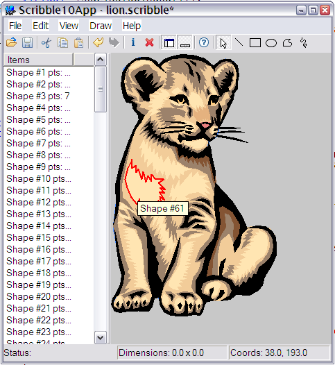
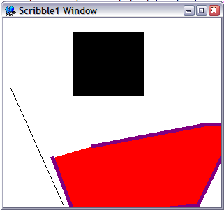

Title: MVC in the Visual Component Framework, Part II Author: Jim Crafton Email: jim.crafton@gmail.com Member ID: 12433 Language: C++ Platform: Windows Technology: Level: Intermediate Description: Part 2 of 4 that explores the Model-View-Controller Pattern in the Visual Component Framework Section Libraries SubSection General License: BSD

The previous article introduced the idea of the Model-View-Controller (MVC) pattern and how it's implemented in the Visual Component Framework. This article will take those ideas and start to build upon them with a new application that we'll add full blown MVC support and all sorts of other cool features. It will be similar in nature to the MFC Scribble example that Microsoft distributes.
First we'll create a new project for our scribble app, call it Scribble1 and we'll start by dealing with our model class. Our model will consist of a list of shapes, with each shape consisting of a array of points, a fill and stroke color, a 2D matrix, a stroke width, a boolean to indicate whether or not the shape is filled, and type to indicate the type of shape we're dealing with. A more "correct" OO design would probably replace the type with derived classes for the specific drawing shapes, but we'll ignore that for the sake of brevity. Here's the shape class:
class ScribbleShape : public VCF::Object {
public:
ScribbleShape():type(stLine),strokeWidth(1.0),filled(true) {}
enum Type {
stLine,
stRect,
stEllipse,
stPolygon,
stFreehand
};
Matrix2D mat;
std::vector<Point> points;
Type type;
double strokeWidth;
bool filled;
Color fill;
Color stroke;
};
To make it easier to implement, our model class will derive from
SimpleListModel. This is a basic implementation of the ListModel
class, and stores data as an array of VarianData objects. In
addition our model will add a default shape, from which shapes
will get their initial settings, and a background color.
class ScribbleModel : public VCF::SimpleListModel {
public:
ScribbleModel(){
//set this to true to
//delete all our objects
deleteVariantObjects_ = true;
backColor = *Color::getColor("white");
}
ScribbleShape* getShape( const unsigned int& index ) {
return (ScribbleShape*) (VCF::Object*) get(index);
}
void addLine( const Point& p1, const Point& p2 ) {
ScribbleShape* s = new ScribbleShape();
*s = defaultShape;
s->points.push_back( p1 );
s->points.push_back( p2 );
s->type = ScribbleShape::stLine;
add( s );
}
void addRect( const Point& p1, const Point& p2 ) {
ScribbleShape* s = new ScribbleShape();
*s = defaultShape;
s->points.push_back( p1 );
s->points.push_back( p2 );
s->type = ScribbleShape::stRect;
add( s );
}
void addEllipse( const Point& p1, const Point& p2 ) {
ScribbleShape* s = new ScribbleShape();
*s = defaultShape;
s->points.push_back( p1 );
s->points.push_back( p2 );
s->type = ScribbleShape::stEllipse;
add( s );
}
//rest omitted
void setDefaultWidth( const double& val ) {
defaultShape.strokeWidth = val;
}
void setDefaultFilled( const bool& val ) {
defaultShape.filled = val;
}
//rest omitted
void setBackColor( Color* val ) {
backColor = *val;
VCF::ModelEvent e( this, VCF::Model::MODEL_CHANGED );
changed( &e );
}
Color* getBackColor() {
return &backColor;
}
Rect getMaxBounds();
protected:
ScribbleShape defaultShape;
Color backColor;
};
This gives us a basic model for storing shapes. Since each ScribbleShape derives from Object, we can store it in the array of VariantData items that the model maintains for us. When we add shapes to the model, the ModelChanged delegate is triggered, and the normal update mechanism for any associated views takes place. With that in mind let's move on to the UI.
Our first UI for the scribble app will be very simple. We will use the main window itself as our view, and handle the painting there as well. Our painting logic simply iterates through all the shape objects in the model, and then draws each shape.
virtual void paint( GraphicsContext* ctx ) {
Window::paint( ctx );
ScribbleModel* scribble = (ScribbleModel*) getViewModel();
Rect r = getClientBounds();
ctx->rectangle( r );
ctx->setColor( scribble->getBackColor() );
ctx->fillPath();
size_t count = scribble->getCount();
for (size_t i=0;i<count;i++ ) {
const ScribbleShape* shape = scribble->getShape(i);
int gcs = ctx->saveState();
ctx->setCurrentTransform( shape->mat );
switch ( shape->type ) {
case ScribbleShape::stLine : {
ctx->setColor( &shape->stroke );
ctx->moveTo( shape->points[0] );
ctx->lineTo( shape->points[1] );
ctx->strokePath();
}
break;
case ScribbleShape::stRect : {
r.setRect( shape->points[0].x_, shape->points[0].y_,
shape->points[1].x_, shape->points[1].y_ );
ctx->rectangle( r );
}
break;
case ScribbleShape::stEllipse : {
r.setRect( shape->points[0].x_, shape->points[0].y_,
shape->points[1].x_, shape->points[1].y_ );
ctx->ellipse( r.getTopLeft(), r.getBottomRight() );
}
break;
case ScribbleShape::stPolygon : {
ctx->polyline( shape->points );
ctx->closePath( shape->points.back() );
}
break;
case ScribbleShape::stFreehand : {
ctx->polyline( shape->points );
}
break;
}
if ( shape->type != ScribbleShape::stLine ) {
if ( shape->filled ) {
ctx->setColor( &shape->fill );
ctx->fillPath();
}
ctx->setStrokeWidth( shape->strokeWidth );
ctx->setColor( &shape->stroke );
ctx->strokePath();
}
ctx->restoreState( gcs );
}
}
The code is reasonably simple, note that the Window, which derives from Control and is therefore also a View, gets it's model using the getViewModel() method. This makes the code pretty easy to migrate to anything else that has a model later on.
Like the previous article, we'll use the VFF format here to define the basic window UI, but it will be very simple:
object Scribble1Window : VCF::Window top = 200 left = 200 height = 300 width = 320 caption = 'Scribble1 Window' endJust enough to position the window set it's title. The rest of work will be done in the window's constructor:
Scribble1Window() {
ScribbleModel* scribble = new ScribbleModel();
addComponent( scribble );
scribble->addView( this );
scribble->addLine( Point(10, 100), Point(100, 300) );
scribble->addRect( Point(100, 20), Point(200, 110) );
ScribbleShape* shape = new ScribbleShape();
shape->type = ScribbleShape::stPolygon;
shape->points.push_back( Point(40, 30) );
shape->points.push_back( Point(34, 120) );
shape->points.push_back( Point(200, 180) );
shape->points.push_back( Point(300, 100) );
shape->points.push_back( Point(260, 80) );
shape->points.push_back( Point(100, 40) );
shape->strokeWidth = 5;
shape->filled = true;
shape->fill = *Color::getColor("red");
shape->stroke = *Color::getColor("purple");
shape->mat = Matrix2D::translation( -40, -30 ) *
Matrix2D::rotation(-25) *
Matrix2D::translation( 70, 200 );
scribble->add( shape );
}
The code creates a new ScribbleModel instance and adds the window (as a view) to the model. We create three shapes, the first two calls are done using the specific ScribbleModel methods to make a shape, and the third call creates a ScribbleShape from scratch and adds it using the ListModel::add() method. Since the ListModel::add() method takes a VariantData object, we can pass in our ScribbleShape instance pointer. Once we build all this and run it, we end up with something like this
